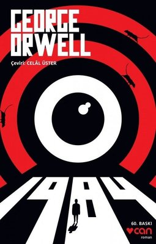
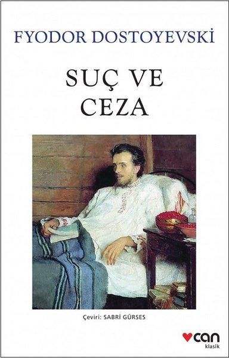
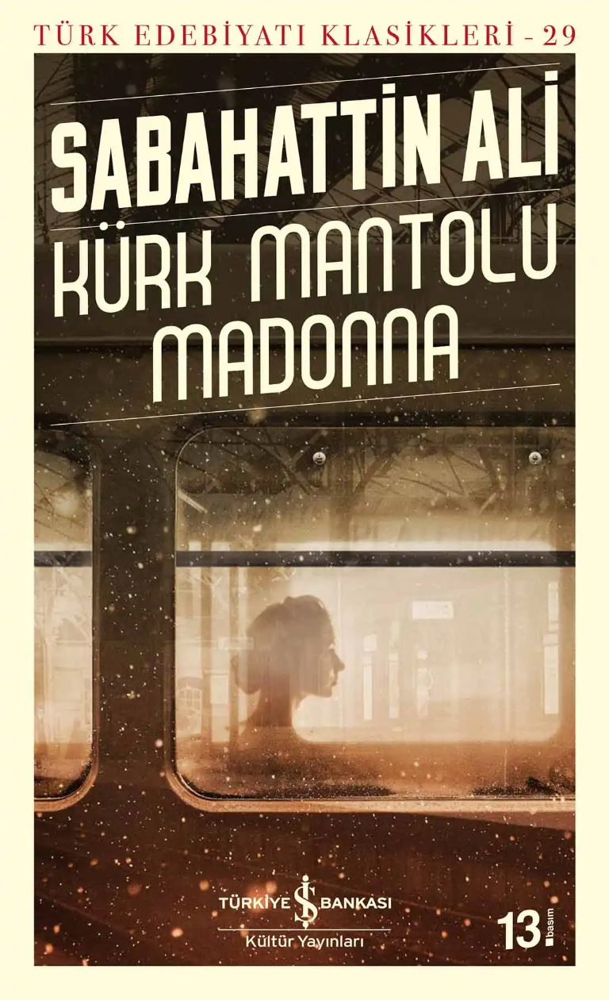
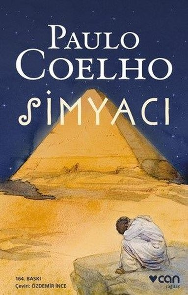
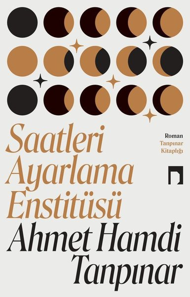

1984
Bireyin düşünce özgürlüğünün ve dilin sistem eliyle nasıl şekillendirilebileceğini çarpıcı bir atmosferle sorgulatan, her dönemde güncelliğini koruyan sarsıcı bir başyapıt.
Seçtiğimiz eserler
Beş klasik eseri keşfedin, türüne göz atın ve okuma tercihinizi kişisel yorumlarla şekillendirin.
5 eser gösteriliyor
Aradığınız kitap başlığıyla eşleşen bir eser bulunamadı.

Bireyin düşünce özgürlüğünün ve dilin sistem eliyle nasıl şekillendirilebileceğini çarpıcı bir atmosferle sorgulatan, her dönemde güncelliğini koruyan sarsıcı bir başyapıt.

İnsanın vicdanıyla yüzleşmesini ve ahlaki sınırları aşmanın yarattığı içsel yıkımı karakter derinliğiyle ilmek ilmek işleyen unutulmaz bir klasik.

İçe kapanık bir ruhun derinliklerini, anlaşılmama hissini ve sessiz bir sevginin insan hayatındaki kalıcı izlerini yalın ama çok etkileyici bir dille anlatıyor.

Kişisel menkıbesinin peşinden giden bir gencin yolculuğu üzerinden hayallere cesaret etmeyi ve evrenin işaretlerini okumayı hatırlatan ilham verici bir hikâye.

Doğu ile Batı arasında sıkışmış toplum yapısını ve modernleşme sürecindeki bürokratik absürtlükleri ince bir mizah ve eşsiz bir üslupla ele alan benzersiz bir eser.